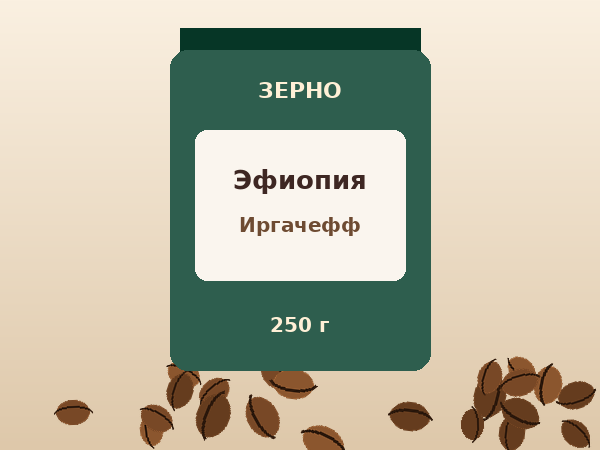
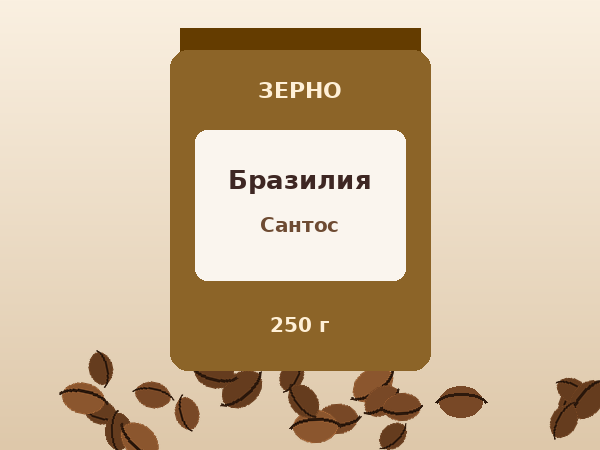
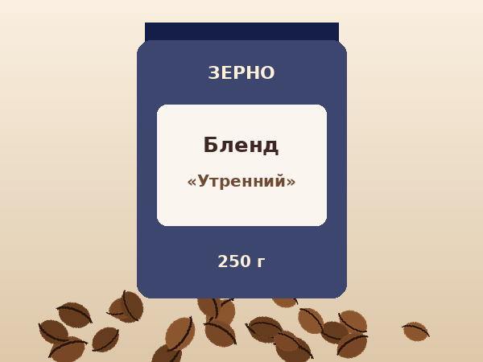

Эфиопия Иргачефф
Яркий и чайный кофе с цветочным ароматом.
от 690 руб.
ПодробнееСвежеобжаренный кофе с доставкой по Москве
Мы обжариваем кофе небольшими партиями и отправляем его в день обжарки. Выбирайте сорт, способ помола и фасовку – остальное сделаем мы.

Яркий и чайный кофе с цветочным ароматом.
от 690 руб.
Подробнее
Сбалансированный кофе с карамельной сладостью.
от 590 руб.
Подробнее
Плотный кофе с орехом и шоколадом.
от 520 руб.
Подробнее
Мягкая смесь на каждый день.
от 480 руб.
Подробнее